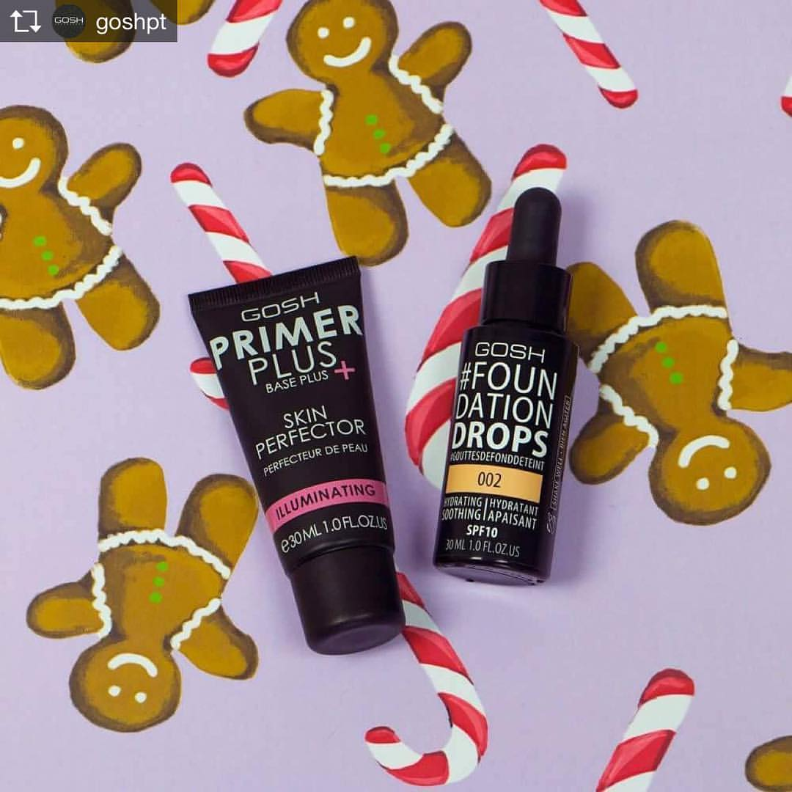
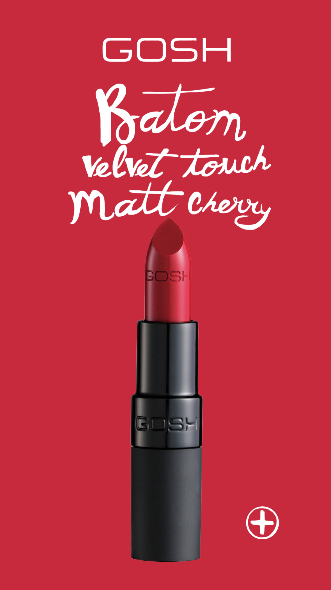
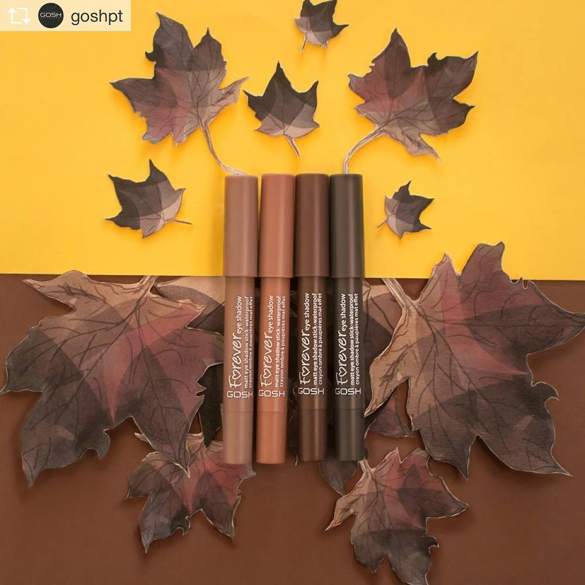
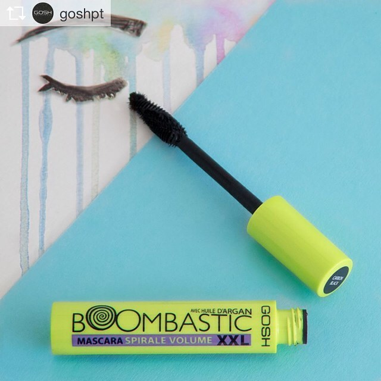
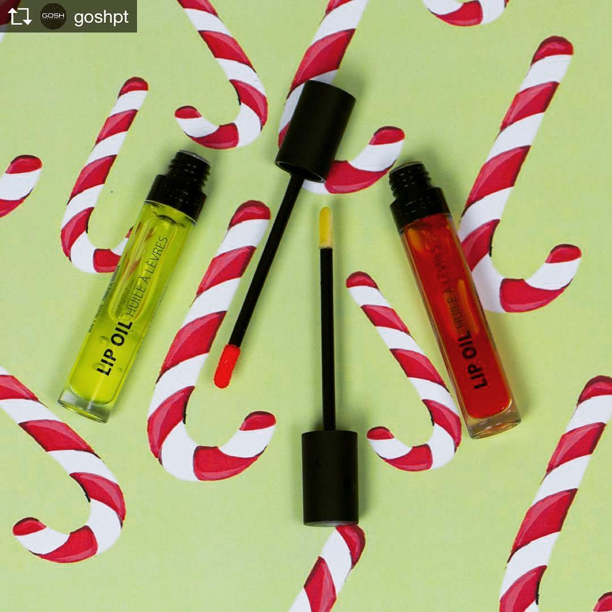
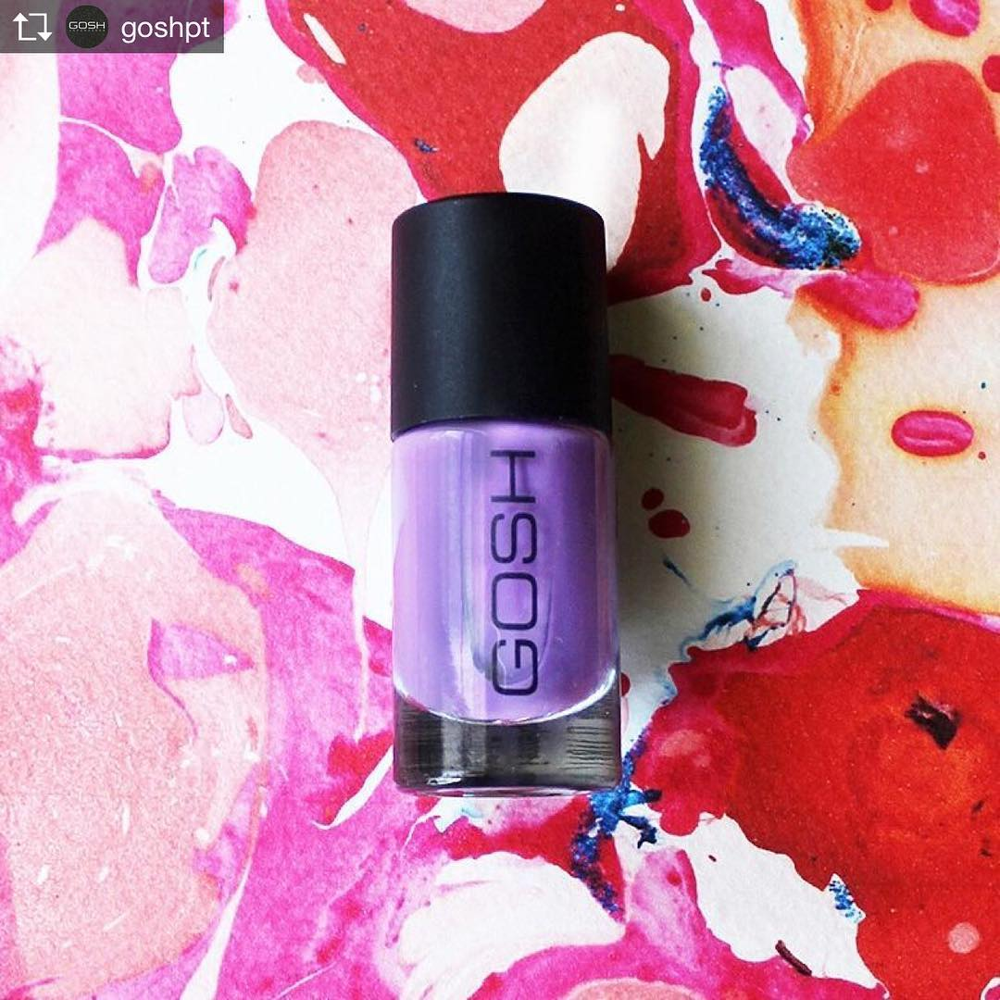
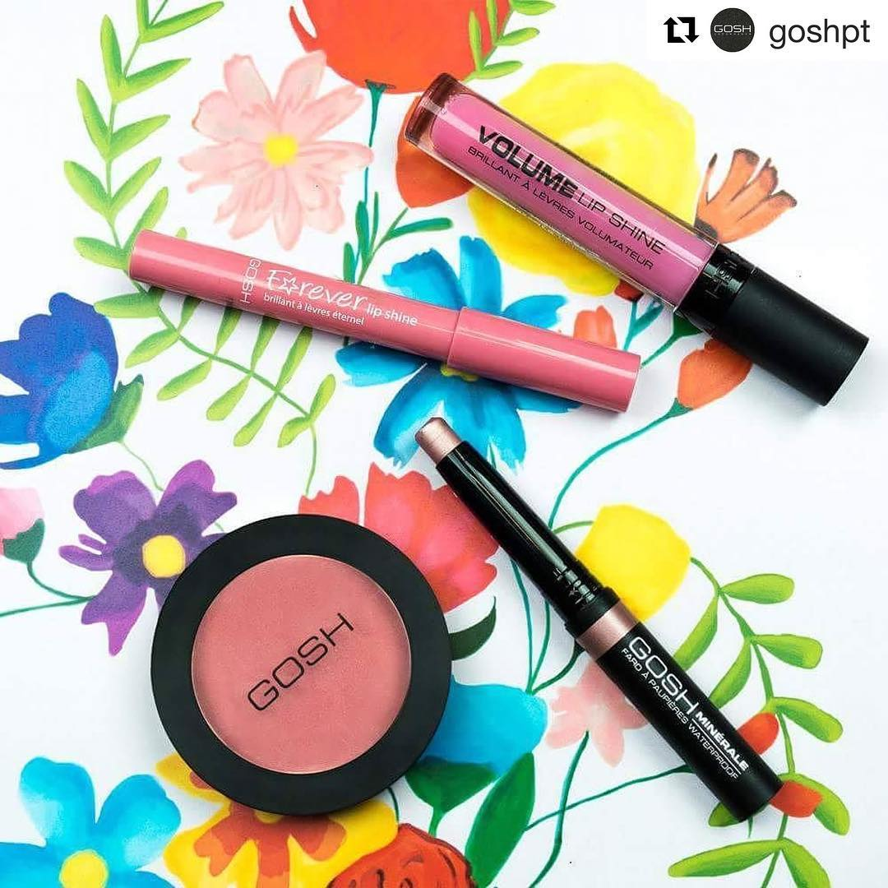
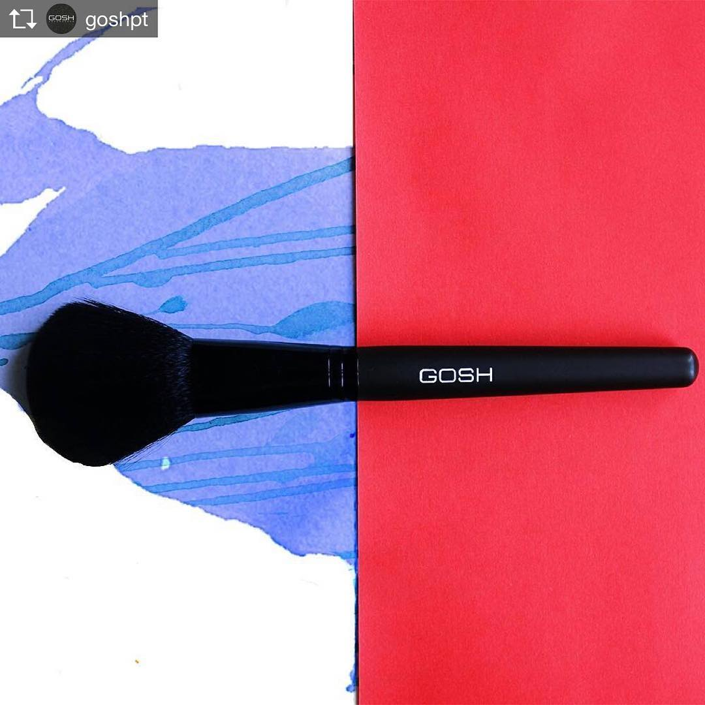

case study 05 —
illustrated content for a Nordic makeup brand on Portuguese social.






01 —
GOSH Copenhagen is a Nordic makeup brand with a clear, considered visual identity. The Portuguese channels needed content that felt distinctly local — playful, story-led, beauty-aware — without breaking from the parent brand's polish.
The job was to build an illustrated content layer over the existing brand system. Make people stop scrolling, make the products feel wearable, and keep the look unmistakably GOSH.
02 —
Built a flexible illustration style for the PT channels — colour, line, gesture — that nodded to the brand's Nordic minimalism while leaving room to play.
Translated launches and hero SKUs (lipsticks, mascaras, eyeliners) into illustrated content that explained the product through scene, mood and ritual.
Designed the rolling content for seasonal moments — autumn palettes, Velvet Touch Matt Cherry, holiday gifting — building visual through-lines.
Worked with the GOSH visual identity team to keep the illustrated layer in sync with photography, packaging, and the look of the parent brand.
closer look —
Each post pairs the GOSH product with a hand-painted background, drawn just for it — leaves for autumn shadows, candy canes for the holiday range, watercolour lashes for the mascara launch.


animated drops —
A handful of posts in the series stepped up to short-form animation — illustrated frames cut in time so the eye look blinks and the kiss lands.
03 —
"An illustrated content layer that felt unmistakably GOSH — and unmistakably local."
The illustrated approach gave the PT channels a distinct voice without drifting from the parent brand's look. It's still one of the projects I point to when I want to show what brand-led illustration looks like in practice — not decoration, but a way of telling the product's story.